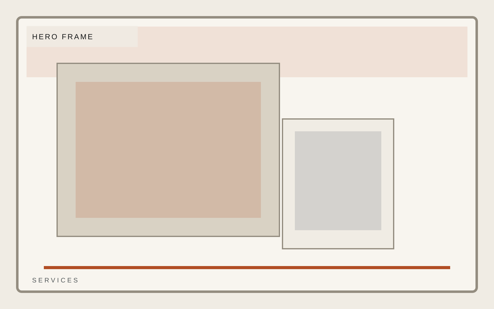
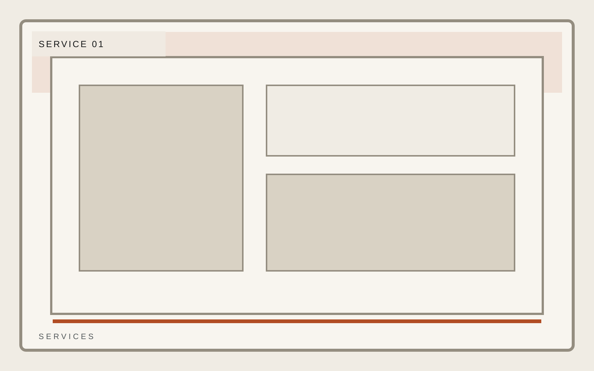

Industrial operations
Field-ready service lines with clean response logic.
Field response, equipment support, and facility-grade execution for operators who care more about standards than slogans. Service architecture should feel dispatch-ready and practical.
Response
24 hour field escalation
Coverage
Rotating regional teams
Standard
Facility-first quality control

Industrial operations
Service Grid
This grid should read as service architecture, not card clutter. Keep the language specific and the spacing decisive.
Response logic
Technical standards
Field accountability

Industrial operations
Response
Response is where tempo matters. Make the section feel urgent without becoming noisy, and show exactly what escalation looks like.
Response logic
Technical standards
Field accountability
Industrial operations
Coverage
Coverage should establish range and logistics. It needs to feel like dispatch logic and capacity planning, not a vague map blob.
Response logic
Technical standards
Field accountability